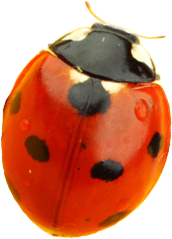
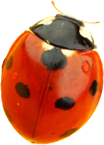

welcome to
LAYERSLIDER
The
content slider
with
breathtaking
transitions
and
awesome
features


with
the famous
parallax effect

optional auto-play
with auto-pause slideshow
easy to add full-sized or windowed videos
+
+
click to play

+
you can now use long backgrounds on multiple slides...

...and much more!
use with any HTML content
built-in powerful API
supports all major browsers
SEO friendly
sample sliders included
free updates & support
+
+
+
+
+
+